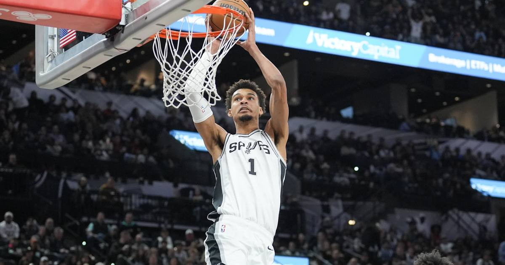

Trail Blazers spoil Wemby's 44-point night in NBA Cup play
Victor Wembanyama dropped 44 points and 16 rebounds in Portland, but Deni Avdija's 33 and a banked dagger three in the final minute gave the Trail Blazers a 116-111 NBA Cup win — San Antonio's first road loss of the season.

Disclosure: this post contains affiliate links. I earn a commission on qualifying purchases.
Victor Wembanyama did just about everything a single player can do in a basketball game on Wednesday night at Moda Center — and it still wasn't enough. The San Antonio star put up 44 points and 16 rebounds, but the Portland Trail Blazers held on for a 116-111 win in NBA Cup group play, handing the Spurs their first road loss of the season.
It was the second monster night from Wembanyama in three weeks. On November 5, he went for 52 points and 24 rebounds against Dallas. This one was nearly as loud, and it still ended in a loss — a reminder that even an MVP-frontrunner season doesn't guarantee wins when the other side gets hot from deep.
The closing sequence
The game turned on the final three minutes, and Wembanyama was at the center of all of it. His turnaround jumper with 3:02 left cut Portland's lead to two, and after Stephon Castle tossed the ball high for an alley-oop dunk, the game was tied at 109 with two minutes remaining.
That's when Deni Avdija took it over. He made two free throws to put Portland ahead 111-109 with 1:45 left. Then, with 38.6 seconds on the clock and the shot clock winding down, Damian Lillard drove, saw Wembanyama waiting, and fired the ball back out to Avdija — who banked in a 25-foot three-pointer to stretch the lead to five. San Antonio never caught up again.
Avdija finished with 33 points, 12 rebounds and 7 assists, shooting 11 of 21 from the field and 5 of 8 from three. Lillard added 29 points, 7 assists and 5 threes of his own.
How Portland won it
The Blazers won this one from the arc. They took 50 of their 94 field-goal attempts from three-point range and drained 19 of them, shooting 38 percent from deep despite a rough 39.4 percent night from the field overall. Portland outscored San Antonio 32-24 in the fourth quarter, and the Moda Center crowd — in the building for the Blazers' first home game since November 11 — got the finish it came for.
Wembanyama set the tone early in the second half, scoring the first 12 San Antonio points of the third quarter and capping the run with a three that gave the Spurs a 69-66 lead. But Portland kept answering from deep, and the Spurs couldn't find a second scorer to match him down the stretch.
The box score
Victor Wembanyama: Spurs; 44 PTS, 16 REB, 3 AST, 2 BLK (17-30 FG, 3-9 3PT, 7-10 FT)
Deni Avdija: Trail Blazers; 33 PTS, 12 REB, 7 AST (11-21 FG, 5-8 3PT)
Damian Lillard: Trail Blazers; 29 PTS, 7 AST, 5 3PT
Stephon Castle: Spurs; 20 PTS, 9 AST, 6 REB
Sidy Cissoko: Trail Blazers; 16 PTS
What it means
Portland improved to 12-6 and moved to 2-1 in NBA Cup group play with a +7 point differential, keeping the Blazers in the hunt for a wild-card spot in the knockout round. San Antonio fell to 15-4 — still atop the Western Conference, and 9-1 in its last 10 — but the loss stings in a group where four teams now sit at 2-1, including Golden State and the Lakers.
The two teams don't have to wait long for the next chapter of group play: Portland hosts Golden State and San Antonio hosts the Lakers on Friday night, both at 8:30 p.m. CT.
Watch
Source: SPURS at TRAIL BLAZERS | EMIRATES NBA CUP 🏆 | FULL GAME HIGHLIGHTS | November 25, 2026 — NBA. The official full-game highlights, including Wembanyama's third-quarter takeover, the Castle alley-oop that tied it at 109, and Avdija's banked dagger three.
Sources
• Trail Blazers spoil another insane Wemby night in NBA Cup play — theScore
• Blazers overcome Victor Wembanyama's 44 points, topple Spurs — Field Level Media
• Blazers Use 3-Point Avalanche in NBA Cup Win vs. Spurs — Sports Illustrated
Gear up: Fanatics via Fanatics